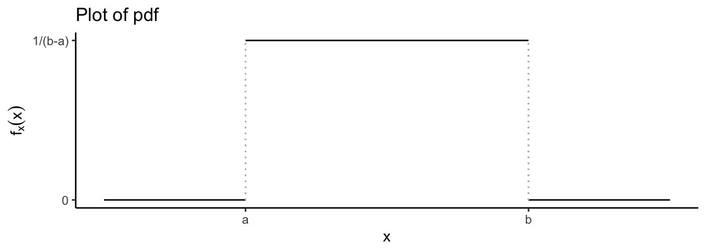
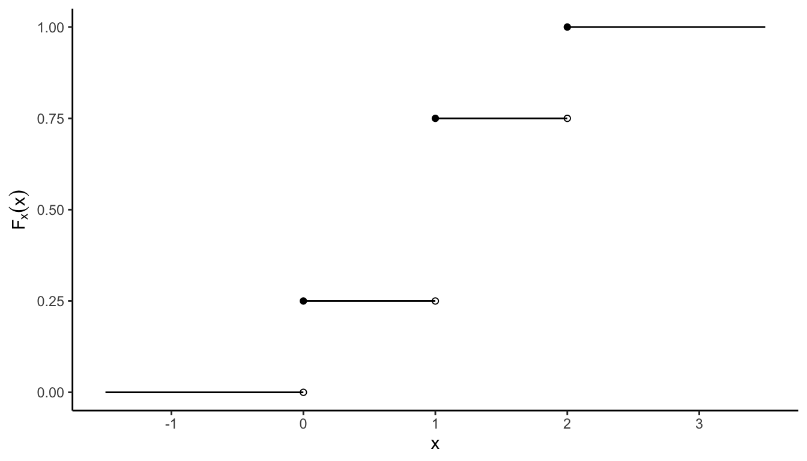

1.4 Random variables
Consider the following problem: Ask (randomly) 50 people whether they like (code this as “1”) or dislike (code this as “0”) learning statistics. What is the sample space for this experiment? This would be all 1/0 combinations such as
\[\begin{align*} \overbrace{1000101\cdots 10001}^{50} \end{align*}\] Specifically, \(\Omega = \big\{(X_1,X_2,\dots,X_{50}) \,|\, X_i \in \{0,1\} \big\}\). Realise that \(|\Omega| = 2^{50}\). This is huge18!
2 ^ {50}## [1] 1.1259e+15Is it practical to work with such a large sample space? Possibly not, even with fancy counting techniques.
But what if we instead defined a variable \(Y = \sum_{i=1}^{50} X_i\)? Here, \(Y\) is the count of the number of people who like learning statistics from this sample of 50, since it only counts the values of ’1’s occuring. Further, the minimum value for \(Y\) is 0, and the maximum is 50. So the new sample space associated with \(Y\) is \(S=\{0,1,2,\dots,50\}\)–much easier to deal with!
\(Y\) is defined to be a mapping from the original sample space \(\Omega\) to the new space \(S\) (usually a set of real numbers). Such a mapping is called a random variable.
Definition 1.6 (Random variable) A random variable \(X\) (abbreviated r.v.) on a probability space \((\Omega,{\mathcal F},\mathbb{P})\) is a measurable function19 from \((\Omega,{\mathcal F})\) to \(\mathbb{R}\), i.e. \(X:\Omega\to\mathbb{R}\).
This is much easier exaplained with an example.
Example 1.11 Flip a coin twice and let \(X\) be the number of heads. The sample space of the coin flips is \(\Omega = \{\text{HH}, \text{HT}, \text{TH}, \text{TT} \}\). The sample space of \(X\) is \(S = \{0,1,2 \}\). The mapping of the random variable is illustrated as follows:

The qualifier random to the term ‘random variable’ implies that its value is not known before observing it. Random variables are conventionally denoted with uppercase letters, and the realised values of the variable will be denoted by the corresponding lowercase letters. Thus, the random variable \(X\) can take the value \(x\).
We can see that a r.v. \(X\) assigns a real number \(X(\omega)\) to each outcome \(\omega\). Can we still calculate probabilities of events? Yes. \[ \mathbb{P}(X=x) = \mathbb{P}\big(X^{-1}(x)\big) = \mathbb{P}\big(\{ \omega \in \Omega \,|\, X(\omega) = x\} \big) \] More generally, \[ \mathbb{P}(X\in S) = \mathbb{P}\big(X^{-1}(x)\big) = \mathbb{P}\big(\{ \omega \in \Omega \,|\, X(\omega) \in S \} \big) \]
Example 1.12 For the previous example, the random variable \(X\) can be summarised as follows:
| \(\omega\) | \(\mathbb{P}(\{\omega\})\) | \(X(\omega)\) |
|---|---|---|
| TT | 1/4 | 0 |
| TH | 1/4 | 1 |
| HT | 1/4 | 1 |
| HH | 1/4 | 2 |
| \(x\) | \(\mathbb{P}(X = x)\) | \(X^{-1}(x)\) |
|---|---|---|
| 0 | 1/4 | TT |
| 1 | 1/2 | TH, HT |
| 2 | 1/4 | HH |
In either case, the sum of the probabilities, whether in the original event space \(\Omega\) or in the range of the random variable \(S\), is equal to one.
1.4.1 Distribution functions
With every random variable \(X\), we associate a function called the cumulative distribution function of \(X\).
Definition 1.7 The cumulative distribution function (cdf) of a r.v. \(X\), denoted \(F_X\), is the function \(F_X:\mathbb{R}\to[0,1]\) defined by \[ F_X(x) = \mathbb{P}(X \leq x), \text{ for all } x. \] The cdf is sometimes just referred to as the distribution function. When there is no ambiguity regarding which random variable the cdf is referring to, we may drop the subcript in \(F_X\).
Equivalently, the distribution function is written \[ F_X(x) = \mathbb{P}\left(\{\omega \in \Omega \mid X(\omega) \leq x \} \right). \]
We make some observations regarding the distribution function:
- \(\lim_{x\to-\infty} F(x) = 0\) and \(\lim_{x\to+\infty} F(x) = 1\).
- \(F(x)\) is non-decreasing, i.e. \(x_1 < x_2 \Rightarrow F(x_1) \leq F(x_2)\). In other words, drawing the function from left to right, it must either increase or stay the same value, but not decrease in value.
- \(F(x)\) is right-continuous: for every \(x_0\), \(\lim_{x \downarrow x_0} F(x) = F(x_0)\). This means “the solid dots will be on the left of the distribution function”.
- \(F\) itself can be discontinuous (see the next example). This is associated with whether the r.v. \(X\) is continuous or not. That is,
- \(F_X(x)\) is a continuous function \(\Rightarrow\) \(X\) is continuous.
- \(F_X(x)\) is a step function \(\Rightarrow\) \(X\) is discrete.

Figure 1.4: A general sketch of a (continuous) cdf.
Once again, the definition above does not give a functional form for the cdf, but the good news is that any function satisfying the above properties is a cdf. For proofs of these facts, see the reference textbooks.
Example 1.13 From Example 1.12, we have that \[ F_X(x)= \begin{cases} 0 &x < 0 \\ 0.25 &0 \leq x < 1 \\ 0.75 &1 \leq x < 2 \\ 1 &x \geq 2 \\ \end{cases} \]
This can be sketched as follows:

1.4.2 Identically distributed r.v.
Definition 1.8 (Identically distributed r.v.) Let \(X\) have cdf \(F\) and let \(Y\) have cdf \(G\). If \(F(x)=G(x)\) for all \(x\), then \(\mathbb{P}(X\in A) = \mathbb{P}(Y \in A)\) for all (measurable) sets \(A\). \(X\) and \(Y\) are said to be identically distributed.
Note that two identically distributed r.v. are not necessarily equal in value, only the probabilities of observing the same values are identical. Think about two independent coin flips. The probability of H/T in each flip is the same, but the outcome may not be.
Example 1.14 Consider again the experiment of tossing a coin twice. Define the random variables \(X\) and \(Y\) to be the number of heads and tails observed, respectively. The distribution of \(X\), as we calculated previously, is
| \(x\) | 0 | 1 | 2 |
|---|---|---|---|
| \(\mathbb{P}(X=x)\) | 1/4 | 1/2 | 1/4 |
One can easily verify that the distribution of \(Y\) is
| \(y\) | 0 | 1 | 2 |
|---|---|---|---|
| \(\mathbb{P}(Y=y)\) | 1/4 | 1/2 | 1/4 |
Thus, for each \(k=0,1,2\), \(\mathbb{P}(X=k)=\mathbb{P}(Y=k)\), so \(X\) and \(Y\) are identically distributed.
For context, the average American, working full-time, would have to work 25 billion years to earn 1 quadrillion dollars.↩︎
A measurable function is simply a function between the underlying sets of two measurable spaces. This will help preserve the structure of the spaces and allow things to be measured. See Wasserman, Appendix 2.13.↩︎